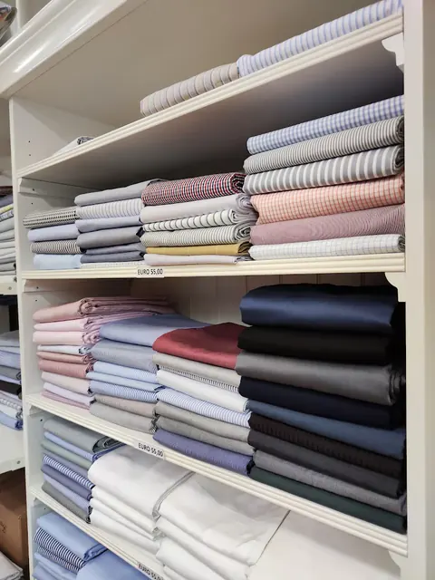

Via Nomentana, 153
00161 Roma
A partire da 55 €. Camicie per uomo e donna, con presa delle misure e scelta dei tessuti a casa tua.

Il primo appuntamento è a casa tua. Da lì scegli come ricevere la camicia finita.
Scrivici su WhatsApp o chiamaci al +39 345 235 7524 per fissare una visita gratuita a domicilio.
Portiamo il catalogo a casa tua. Puoi sfogliare i campioni e scegliere il tessuto della camicia mentre prendiamo le tue misure.
Quando è pronta, puoi ritirarla gratuitamente in negozio o fartela consegnare a domicilio per 10 €.
Durante la visita gratuita a domicilio a Roma portiamo il campionario. Puoi sfogliarlo, toccare i tessuti e confrontare dal vivo tinte unite, righe e quadretti.





Passa a trovarci o scegli il punto vendita più comodo per il ritiro gratuito.
00161 Roma
00187 Roma